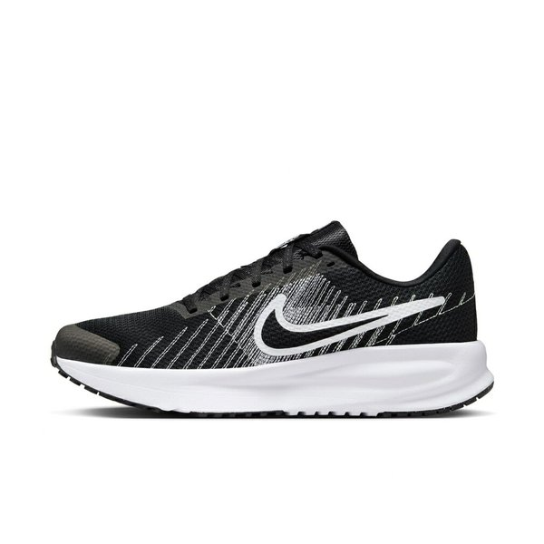
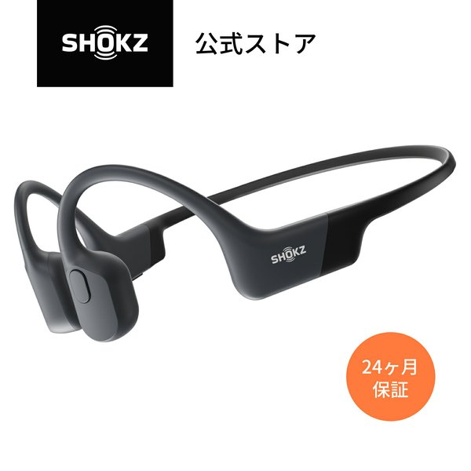
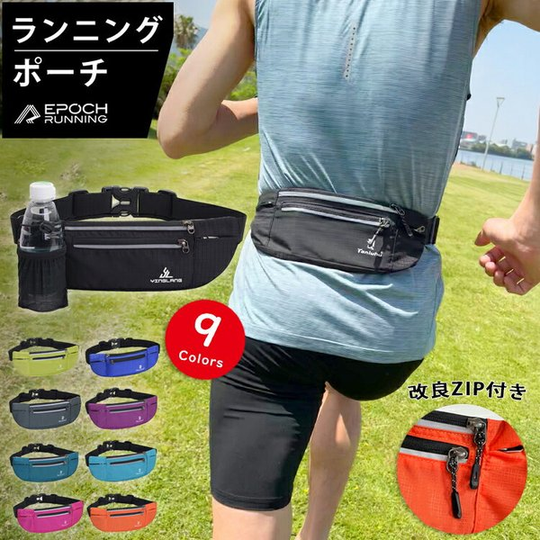
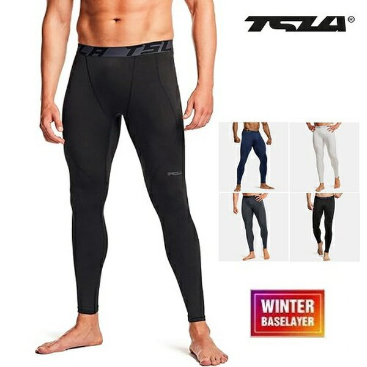
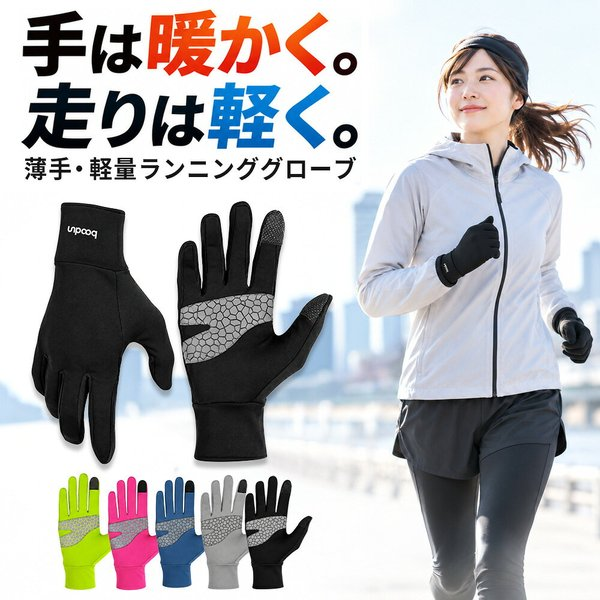
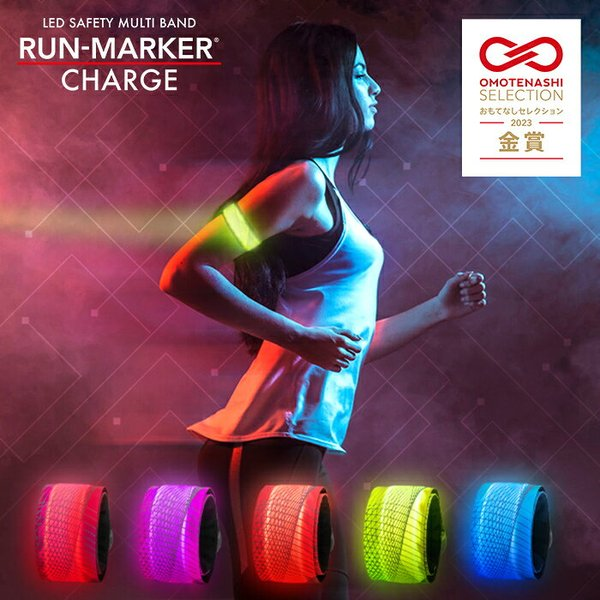
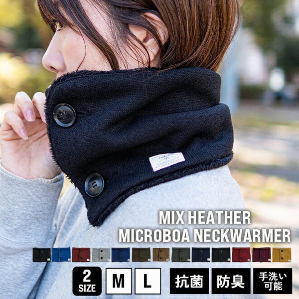
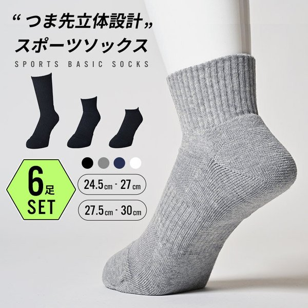
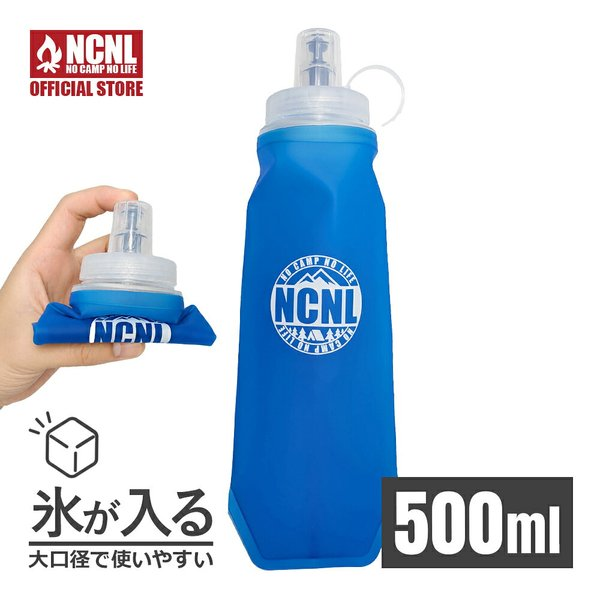
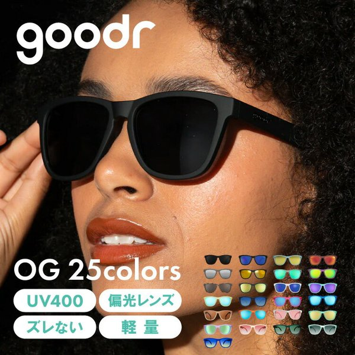

【2026年・冬のランニング入門】ナイキのランニングシューズ・Shokz骨伝導イヤホン・ランニングポーチ・裏起毛タイツ・防寒グローブ・LEDアームバンド・ネックウォーマー・ソックス・ソフトフラスク・goodrサングラス10選
冬は走るのに向いている季節です。夏ほど体温が上がらず、長い距離をゆっくり走れます。ただし、朝は暗く、路面は冷え、指先と耳が痛くなります。走る習慣が続かない原因の多くは、この「寒さと暗さ」です。
選ぶ軸は3つです。「まず足元」。冬は地面が硬く、着地の衝撃が脚に返ってくるので、クッションのあるシューズを選びます。「次に暗さ対策」。LEDのアームバンドと反射材があると、車や自転車から見つけてもらいやすくなります。「最後に体温調整」。走り出しは寒く、5分走ると暑くなります。薄手のネックウォーマーとグローブは、脱ぎ着できるものを選ぶと調整が効きます。なお、レビュー件数が50件に満たない商品は記事内に実数を明記しています。
本記事では、楽天市場で人気・高評価の冬のランニング・ウォーキング入門グッズ10選を、実売価格とレビュー評価つきで写真付き紹介します。
- おすすめ10選 スペック・特徴比較表
- BEST 1｜RUN DEFY ランニングシューズ メンズ HM9594-004
- BEST 2｜OpenRun 骨伝導イヤホン（OpenRun Mini選択可）
- BEST 3｜4ZIP ランニングポーチ ウエストバッグ 給水ボトル対応
- BEST 4｜裏起毛 コンプレッションタイツ メンズ
- BEST 5｜防風・保温 ランニンググローブ スマホ対応
- BEST 6｜RUN-MARKER CHARGE 充電式LEDアームバンド
- BEST 7｜マイクロボア ネックウォーマー ボタン付き
- BEST 8｜つま先立体設計 スポーツソックス 6足組 丈が選べる
- BEST 9｜ソフトフラスク ハイドレーションボトル 500ml
- BEST 10｜OG サングラス 偏光・UV400
- 【読者負担0円】買わなくても得する無料サービス
- まとめ：冬のランニング入門グッズ10選の選び方
| 順位 | 商品名 | ブランド | 最大の特徴・おすすめ理由 | 総合評価 |
|---|---|---|---|---|
| BEST 1 | RUN DEFY ランニングシューズ メンズ HM9594-004 | ナイキ（NIKE） | 厚めのミッドソールで着地の衝撃をやわらげる | 4.75 |
| BEST 2 | OpenRun 骨伝導イヤホン（OpenRun Mini選択可） | Shokz（ショックス） | 耳をふさがないので周囲の音が聞こえる | 4.65 |
| BEST 3 | 4ZIP ランニングポーチ ウエストバッグ 給水ボトル対応 | EPOCH（4ZIP） | 4か所のジッパーで荷物を分けられる | 4.45 |
| BEST 4 | 裏起毛 コンプレッションタイツ メンズ | TESLA（テスラ） | 裏起毛で脚を冷やさない | 4.49 |
| BEST 5 | 防風・保温 ランニンググローブ スマホ対応 | ランニンググローブ（ノーブランド企画品） | タッチパネル対応でスマホを操作できる | 4.53 |
| BEST 6 | RUN-MARKER CHARGE 充電式LEDアームバンド | ランマーカー | USB充電式で電池交換が不要 | 4.75 |
| BEST 7 | マイクロボア ネックウォーマー ボタン付き | nakota（ナコタ） | ボタン留めでずれにくい | 4.57 |
| BEST 8 | つま先立体設計 スポーツソックス 6足組 丈が選べる | スポーツソックス（ノーブランド企画品） | つま先立体設計で踏ん張りやすい | 4.64 |
| BEST 9 | ソフトフラスク ハイドレーションボトル 500ml | NCNL（NO CAMP NO LIFE） | 飲むとへこんで小さくなる | 4.59 |
| BEST 10 | OG サングラス 偏光・UV400 | goodr（グダー） | 走ってもズレにくい設計 | 4.62 |
RUN DEFY ランニングシューズ メンズ HM9594-004

ナイキのRUN DEFYは、クッション性を重視した入門向けのランニングシューズです。ミッドソールが厚めで、初めて走る人や久しぶりに走る人の着地の衝撃をやわらげます。アッパーはメッシュで通気性があり、冬でも足が蒸れにくい設計。ソールはグリップがあるので、濡れた路面でも走りやすいモデルです。楽天市場での実売価格は約3,999円（2026年11月時点）。
- 厚めのミッドソールで着地の衝撃をやわらげる
- メッシュアッパーで蒸れにくい
- グリップのあるソールで濡れた路面にも対応
- 厚底なので、スピード練習よりゆっくり走る用途に向く
OpenRun 骨伝導イヤホン（OpenRun Mini選択可）

ShokzのOpenRunは、耳をふさがずに音を伝える骨伝導イヤホンです。走っているときも周囲の音が聞こえるので、車や自転車の接近に気づきやすく、夜間のランニングでも安心感があります。マグネット充電のUSB-Cで、汗をかいても充電端子が濡れにくい設計。軽量で、メガネをかけていても干渉しにくい形状です。楽天市場での実売価格は約17,880円（2026年11月時点）。
- 耳をふさがないので周囲の音が聞こえる
- マグネット充電で汗に強い
- 軽量でメガネとも干渉しにくい
- 音量を上げても低音は控えめで、静かな室内向けの音質ではない
4ZIP ランニングポーチ ウエストバッグ 給水ボトル対応

EPOCHの4ZIPは、腰に巻いて使うランニングポーチです。ジッパーが4か所に分かれていて、スマホと鍵と小銭を分けて入れられます。背面のポケットには給水ボトルを挿せ、長時間のジョギングでも水分を持ち歩けます。リフレクターが付いているので、夕方以降のランニングでも存在が見えやすい設計です。楽天市場での実売価格は約1,480円（2026年11月時点）。
- 4か所のジッパーで荷物を分けられる
- 給水ボトルを挿せる
- リフレクター付きで夕方以降も見えやすい
- 荷物を入れすぎると走行中に揺れやすくなる
裏起毛 コンプレッションタイツ メンズ

TESLAの裏起毛タイツは、内側を起毛したコンプレッションウェアです。冬のランニングやウォーキングで脚を冷やさず、筋肉を軽く締める着圧で動きを支えます。吸湿速乾とUVカットを備え、汗をかいても冷えにくいのが特徴。上にハーフパンツを重ねれば、真冬でも走れる防寒インナーになります。楽天市場での実売価格は約2,190円（2026年11月時点）。
- 裏起毛で脚を冷やさない
- 着圧で筋肉を支える
- 吸湿速乾で汗冷えしにくい
- 起毛素材なので、春秋に履くと暑く感じる
防風・保温 ランニンググローブ スマホ対応

冬のランニングで指先が冷えるのを防ぐ、防風・保温タイプのグローブです。親指と人差し指の先にタッチパネル対応の導電素材が付き、手袋をしたままスマホを操作できます。手のひらには滑り止めがあり、走りながらでも手が滑りにくい設計。薄手なので、ポケットに入れてもかさばりません。楽天市場での実売価格は約1,890円（2026年11月時点）。
- タッチパネル対応でスマホを操作できる
- 手のひらに滑り止め付き
- 薄手でポケットに入れてもかさばらない
- 真冬の氷点下では薄手なぶん指先の冷たさが残る
RUN-MARKER CHARGE 充電式LEDアームバンド

ランマーカーのCHARGEは、腕に巻いて使う充電式のLEDライトです。点滅と常灯を切り替えられ、夜間のランニングやウォーキングで車や自転車から見つけてもらいやすくなります。USB充電式で電池の交換が不要。軽量なので、走っているときの負担が少なく、反射材だけでは心もとない暗い道でも安心感があります。楽天市場での実売価格は約1,980円（2026年11月時点）。
- USB充電式で電池交換が不要
- 点滅と常灯を切り替えられる
- 軽量で走行中の負担が少ない
- 連続点灯で使うと、点滅より早く充電が減る
マイクロボア ネックウォーマー ボタン付き

nakotaのネックウォーマーは、マイクロボア素材の薄手タイプです。ボタンで留める形なので、走っている最中にずれにくく、暑くなったら外してポケットに入れられます。抗菌・防臭加工で、汗をかくランニングでもにおいが気になりにくい。首元を覆うだけで体感温度が変わるので、冬の朝の外出が楽になります。楽天市場での実売価格は約2,410円（2026年11月時点）。
- ボタン留めでずれにくい
- 抗菌・防臭加工
- 薄手でポケットにしまえる
- ボア素材なので、強風時は頬までは覆えない
つま先立体設計 スポーツソックス 6足組 丈が選べる

つま先を立体的に編んだスポーツソックス6足組です。足指の形に沿うので、走るときに指先で踏ん張りやすく、靴の中でずれにくくなります。丈はショート・アンクル・クルーから選べ、好みと靴に合わせられます。6足組なので、毎日走って洗濯が追いつかない人でも回せます。楽天市場での実売価格は約1,000円（2026年11月時点）。
- つま先立体設計で踏ん張りやすい
- 丈を3種類から選べる
- 6足組で洗濯の回転が楽
- 厚手ではないので、クッション性はインソールで補う
ソフトフラスク ハイドレーションボトル 500ml

NCNLのソフトフラスクは、飲むとへこむ軟らかいボトルです。走りながらでも口を押さえて飲みやすく、飲んだ分だけ小さくなるので、腰のポーチに入れても揺れにくいのが利点。500mlと350ml、150mlから選べ、給水の量に合わせて使い分けられます。軽量なので、長めのジョギングでも負担になりません。楽天市場での実売価格は約1,210円（2026年11月時点）。
- 飲むとへこんで小さくなる
- 走りながら飲みやすい口形状
- 150mlから500mlまで選べる
- レビューは29件と少なく、軟らかいぶん落とすと傷みやすい
OG サングラス 偏光・UV400

goodrのOGは、走ってもズレにくい設計のスポーツサングラスです。鼻と耳に当たる部分が滑りにくい素材で、汗をかいても位置が保たれます。偏光レンズで路面の照り返しを抑え、UV400で紫外線をカット。冬の低い日差しや、川沿い・海沿いの反射がまぶしいコースで役立ちます。カラーバリエーションが多く、好みで選べます。楽天市場での実売価格は約4,950円（2026年11月時点）。
- 走ってもズレにくい設計
- 偏光レンズで照り返しを抑える
- UV400で紫外線カット
- レンズが濃いので、夕方以降は視界が暗く感じる
この記事の商品を買う前に、まずは無料で得する選択肢をチェック。どれも登録・利用は0円で、無料期間中に解約すれば料金はかかりません。読みたい雑誌がある人、ポイントを貯めたい人、アンケートなら気軽という人、それぞれに合うものを選べます。
初回31日無料・無料期間中に解約すれば0円 → 楽天ポイントモール｜登録無料で毎日ポイ活
買い物なしでもポイントが貯まる無料サービス → 楽天インサイト｜アンケートに答えてポイント
登録無料・すきま時間のアンケートで貯まる → 楽天カード｜年会費永年無料
新規発行・年会費ずっと0円 →
4つのサービスの違いと使い分けは「出費0円で得する！買わずにポイントが貯まる無料サービス厳選4選」でまとめています。
💡 まとめ：冬のランニング入門グッズ10選の選び方
冬のランニングは、足元・見え方・体温の3つを揃えると続きます。足元は、クッションのあるナイキのRUN DEFYと、脚を冷やさないTESLAの裏起毛タイツ。見え方は、ランマーカーの充電式LEDアームバンドと、リフレクター付きのEPOCH 4ZIPポーチ。体温調節は、脱ぎ着できるnakotaのネックウォーマー、防風のランニンググローブ、6足組のスポーツソックス。走りながらの水分は、腰に挿せるNCNLのソフトフラスク。日差しと照り返しが強い日は、ズレにくいgoodrのサングラス。耳をふさがないShokzの骨伝導イヤホンなら、音楽を聴きながらでも周囲の音が聞こえます。最初はこの中から、シューズとLEDライトの2つだけ揃えれば十分です。
楽天市場では「5と0のつく日」や「お買い物マラソン」などのキャンペーンに合わせて購入すると、ポイント還元が最大化してお得に手に入ります。ぜひチェックしてみてくださいね。